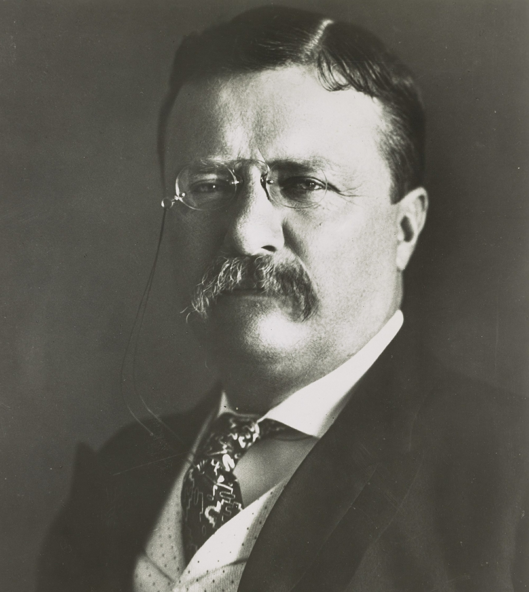

Theodore Roosevelt Campaign

“Do what you can, with what you have, where you are.” - Theodore Roosevelt
Theodore's Presidential Plan
If Mr. Roosevelt were to ever get elected, he would make a great president. When he becomes president, he plans to
Destroy trusts, make government play a role in the betterment of the people, and reserve the natural landscape
for future generations.
Theodore will coin the phrase "a Square Deal" whi
ch revolves around workers' rights and more regulation on massive businesses that participated in unfair practices.
Theodore promises to destroy so many trusts that people will call him a trustbuster!
because of the amount of monopolies he will crack down on and seperate
The Bull Moose Party
Theodore Roosevelt is a member and the founding father of the
The Bull Moose Party because he is unsatisfied with the renomination of his thought-to-be succesor, William Howard Taft,
because he didn't live up to Theodore's expectations.
So he created an entirely new party so he could run against him and, hopefully, deny him of another term of presidency. So why wouldn't you
vote for him again? He has already bettered the lives of the citizens his previous term!
-by Nnamdi O.